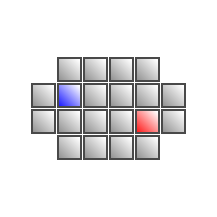
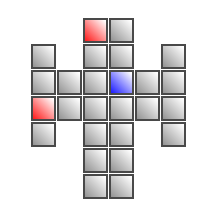
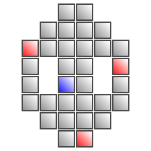

Chapter 7 悲劇の高原Tragic Highland
- 1グランマ/The Rose's Thorns
-
Information
- 80/99
- 5:00:00
Process
- 血腫を一つ除去
- 血腫を二つ除去
- 新たに三つの血腫が出現
- どれか一つの組織液を吸い上げると照明が落ちる
- 全ての血腫を摘出
Guide
血腫の摘出手順
- 組織液をドレーンで吸い上げる
- 血腫の周囲に結合している腫瘍（足）をメスで切除する
- 黒ずんだ色になった血腫をピンセットで摘出する
血腫が複数存在する場合、血腫の摘出時に他に摘出不可能な血腫が存在すると、摘出後に血腫が復活してしまうので、全てを摘出可能な状態にしてから摘出しなければならない。
血腫が存在していると周囲に青い小さな腫瘍を生み出す。レーザーで焼いた後にゼリーで穴を腫瘍痕を治そう。この小さい腫瘍は血腫が存在していると最大3個まで発生する。発生速度は結構速いので、まずは血腫の摘出を優先しよう。
血腫を摘出する際はバイタルに注意する。まず3つの足を長時間メスで切る為、ある程度バイタルが減る。さらに足を全て切って血腫が摘出可能になった状態が最もバイタルの減少が激しくなるので、すぐにピンセットで摘出しよう。
暗闇の中での手術
三つ同時に摘出する際、一つでも組織液を吸い上げきると照明が落ちて暗闇の中で手術しなくてはならなくなる。
そうなったら特殊器具のライターを使うことで指定した箇所の周囲だけを明るく照らしてくれるようになる。
複数の血腫を摘出するには
血腫を摘出するまでにかなりのバイタルを削られてしまう。
初期は一つ、次に二つ、最後は三つ同時に摘出しなければならないが、特に最後はバイタル減少が大きいので、事前に準備しなければならない。
まず、二つ同時に摘出したら青い腫瘍を一つだけ残してバイタルを回復する。
三つ同時に出現したら、組織液をOKが出て吸い上げてしまう直前まで三つとも吸い上げる。 こうすることで暗闇後に少しでも早く摘出できるようにしてバイタルを少しでも多く保とう。
次に照明が落ちたら血腫の足をメスで切断するが、この時3つとも切断せず、2つを切断したら3つめは半分ぐらいだけ切っておく。残りの血腫も同じ状態にしよう。ここで一旦バイタルを回復。その後、一気に残りの足にメスを入れて摘出しよう。摘出可能な血腫を放置するのが最もダメージが大きいので、なるべく平行に処置するのがコツ。
Bonus
条件 倍率 MISS判定無し x1.3 【2分20秒/2分30秒/2分50秒】以上残して手術終了 x1.2 MAX CHAIN【60/80/85】以上 x1.2 血腫を復活させない x1.3 Operation Rank
ランク Easy Normal Hard C ～2599 ～3799 ～5599 B 2600～2799 3800～4099 5600～5799 A 2800～2899 4100～4499 5800～5999 S 2900～ 4500～ 6000～6199 XS - - 6200～ Movie
")
- 2掃討作戦/Strike Force
-
Information
- 60/75、55/75、50/75
- 10:00:00
Process
- 一人目 スティグマ「ブラキオン」の除去
- 二人目 スティグマ「ケイル・ソーマ」の除去
- 三人目 スティグマ「ソーマ・オニュクス」の除去
Guide
一人目：ブラキオン
特に問題は無いと思われる。
二人目：ケイル & ソーマ
ソーマと裂傷を生成するケイル2体が現れるが、まずはケイルを一体だけ倒す。その状態で、今度はソーマの処置を行う。ケイルは放っておいても裂傷を生成するだけなので、暇を見て縫合なり回復なりすればよい。
ソーマ処置後はケイルの処置に移る。放置しておいたケイルを倒すと新たに2体が現れる。うち片方は裂傷ではなく患部内に腫瘍を生み出すようになっている。
2体のうちどちらか片方を倒すとさらに1体現れて同時に3体ものケイルを相手にしなければならなくなるので、事前に2体に均等にダメージを与えておいて、3体になったらすぐにトドメを刺して、2体にしよう。
三人目：ソーマ & オニュクス
基本的にオニュクスを優先する。ここで必要なのは、いかに素早くオニュクスに血清を投与しつつ、赤い腫瘍に対処できるかどうか。
そのためにも、オニュクスが潜伏する方向だけは絶対に確認する。この状態で赤い腫瘍を生み出されているならレーザーで焼き、改めてオニュクスの方角をエコーで探す。
結界が張られると血清を投与した直後から新たに潜伏する間ぐらいしか赤い腫瘍を潰す暇が無くなるので、速攻でオニュクスを倒すつもりで。
なお、オニュクスの最初の潜伏場所は画面中央なので、まずはソーマを2回吸って小さくしてからオニュクスにメスを入れよう。
Bonus
条件 倍率 MISS判定無し x1.3 【30秒/1分/1分10秒】以上残して手術終了 x1.2 先端組織を復活させない x1.2 硬化した組織の数【8/5/3】個以下 x1.3 Operation Rank
ランク Easy Normal Hard C ～10599 ～10999 ～11399 B 10600～10799 11000～11499 11400～11999 A 10800～10999 11500～11999 12000～12499 S 11000～ 12000～ 12500～13999 XS - - 14000～ for XS
最後のソーマ・オニュクスが危険。
Movie
")
- 3教授、あなたの名前を/Identity Loss
-
Information
- 80/99
- 5:00:00
Process
- チップを取り外す
- ピンを抜く
- チップを元に戻す
Guide
第一段階
中央の黄色いチップをピンセットで摘出するだけだが、周囲を回る光の弾に接触するとバイタルに多大なダメージを受けてしまう。
第二段階
5本のプラグをピンセットで抜く。抜く際にまっすぐ抜かないとミスになってしまうので注意する。また、プラグが光っている時に触れるとバイタルに多大なダメージを受けてしまうので、光が収まってから抜くこと。
第三段階
黄色いチップを中央に戻すが、光の弾の数が多くなっている上、NORMALとHARDではピンセットで掴んだ状態のチップをホーミングする弾まで存在する。
光の弾の動きをよく見て、通り道ができたと思ってからピンセットでチップをつかみ、一気に中央へセットしよう。
Bonus
条件 倍率 超執刀を使用しない x1.4 第1段階の所要時間【20秒/12秒/5秒】以下 x1.2 第2段階の所要時間【20秒/15秒/15秒】以下 x1.2 第3段階の所要時間【20秒/12秒/10秒】以下 x1.2 Operation Rank
ランク Easy Normal Hard C ～1299 ～2399 ～3899 B 1300～1399 2400～2599 3900～4099 A 1400～1499 2600～2899 4100～4399 S 1500～ 2900～ 4400～4499 XS - - 4500～ for XS
操作に慣れていないと時間制限がかなり厳しい。とにかく練習あるのみ。
Movie
")
- 4カフカスの兵器庫/Weapon Depot
-
Information
- 55/90
- 5:00:00
Process
- 開胸
- 炎症が1個出現
- 炎症が2個出現
- 炎症が3個出現
- 炎症が4個出現
- 炎症が5個出現
- 炎症が5個出現
Guide
炎症を処置するには、同じ色の血清を投与するだけである。しかし、血清を投与するには事前に鎮静剤を投与しなければならず、さらに、鎮静剤を投与すると全ての炎症の色が消えてしまう。
そこで、事前に色を覚えた上で鎮静剤を投与し、以前と同じ色の血清を各々の炎症に投与していくことになる。
なお、鎮静剤はどの炎症に投与しても、全ての炎症に効果が表れる。
順番が大事
炎症の色は破裂するまでの時間を表しており、赤、黄、青の順に破裂までの時間が大きくなっているので、とにかく赤い炎症を最優先で、その次に黄色、その次に青、と処置しよう。
また、色によって必要な血清の量も異なる。赤だけは血清を注射器いっぱいに入れた場合、続けて2つまで処置することができる。
炎症を放置すると破裂してバイタルを大きく減らされてしまうので、ひとつも破裂させないつもりで挑もう。
Bonus
条件 倍率 MISS判定無し x1.3 【3分20秒/3分30秒/3分35秒】以上残して手術終了 x1.2 MAX CHAIN【20/30/35】以上 x1.2 炎症を破裂させない x1.3 Operation Rank
ランク Easy Normal Hard C ～1799 ～2899 ～4099 B 1800～1999 2900～3099 4100～4399 A 2000～2099 3100～3299 4400～4599 S 2100～ 3300～ 4600～4799 XS - - 4800～ for XS
スコアがかなり厳しい。稼げる要素が存在せず、とにかく急いで手術を終わらせないとスコアが足りない。マーカスは超執刀を最後の炎症が出現する直前に使おう。ヴァレリーは会話が入って4つずつ出現するようになる直前に使おう。
Movie
")
- 5古城の女/Lady of the Castle
-
Information
- 99/99
- 5:00:00
Process
- 開胸
- 制御チップをレーザーで焼く
- 全ての制御チップをピンセットで取り除く
- 制御版にメスを入れて取り外す
- 制御コアにレーザーを当てて沈黙させる
- 沈黙したコアにメスを複数回入れてピンセットで取り外す
- 新たな制御版を心臓に設置
- 制御チップをはめる
Guide
制御コア
レーザーを一定時間当てるとメスで切ることができるようになる。しかし、メスで切れる時間は少ししかないので、急いで切る必要がある。
合計
心細動に注意
手術中は短い間隔で心細動が発生する。発生してから心臓マッサージまでタイムラグがあり、その間もバイタルは減り続けるので、心細動が発生する前にバイタルはある程度高くしなくてはならない。
また、常にどこかから出血しているので、心臓マッサージ後はバイタル回復も兼ねてゼリーを塗りたくろう。
Bonus
条件 倍率 MISS判定無し x1.3 【2分20秒/2分25秒/2分30秒】以上残して手術終了 x1.2 MAX CHAIN【35/40/42】以上 x1.2 COOL判定【10/15/18】回以上取得 x1.3 Operation Rank
ランク Easy Normal Hard C ～2999 ～4499 ～6499 B 3000～3099 4500～4799 6500～6699 A 3100～3199 4800～4999 6700～6999 S 3200～ 5000～ 7000～7199 XS - - 7200～ for XS
ボーナスを全て埋めただけでは圧倒的にスコアが足りない。制御コアの切除を最後にメスで1周するところまで進めておいて、あとはひたすら出血の治療と心臓マッサージでチェインを稼ごう。大体100CHAINを超えたあたりで時間も厳しくなるので通常通り処置しよう。もたもたしてると心細動で手間取って時間制限を満たせなくなってしまう。
Movie
 Speedrun 2h49m7s part 13 of 16")
- 6マスター・ヴァフシュティ/Master Vakhusti
-
Information
- 99/99
- 10:00:00
Process
- スティグマ「カルディア」の除去
Guide
膜の剥離
カルディアは膜の上をゆっくり移動する。赤い膜の上にカルディアが乗るとバイタルにダメージを与えるだけでなく、バイタルの最大値が下がってしまうので、赤い膜を最優先で摘出する。
膜を摘出するにはゼリーを塗った後に四隅にメスを入れることで剥がせるようになる。火傷の治療時と一緒だが、こちらの膜は剥がせるようになったもの同士が隣接していると、ピンセットでまとめて掴むことができるので、ゼリーを広く塗って一気に切り取り、一気に摘出してしまおう。
ただし、ピンセットで掴もうとした膜の繋がりの上にカルディアが乗っていると摘出できないので、大人しく待とう。
膜が10枚以上残っていると赤い膜が発生してしまうので、少しでも速く膜を除去すれば安全になる。
全ての膜を除去すると新たな膜を展開してくる。合計3回除去すると次の段階へ移動する。
本体へ攻撃
ここからが本番。高速移動をしながら各種攻撃を繰り出してくる。
- 裂傷+血だまり
- 裂傷をランダムに5～10個生成
- 腫瘍を設置
- 波動を放つ
攻撃のパターンとしては、1と2のどちらかと3の攻撃を順不同で行ってくる。その後に高速移動を止めて波動を放つ。放ち終わった後は、再びランダムに攻撃を行ってくる。
カルディアの動きはかなり早く、慣れていないとレーザーを当てるのが困難だ。
そこで、カルディアが動き回っている間は常に回復に専念し、裂傷を作ってきたら縫合し、腫瘍を設置してきたら摘出を行う。特に腫瘍は最優先で摘出しよう。これが一つ残っているだけでもかなり致命的なダメージになってしまう。
波動を放つ際に腫瘍が無いことを確認し、バイタルも50程度あるようならレーザーで攻撃しよう。波動を放つ間は一切動かないので容易にダメージを与えられる。その後、再び動き出すので回復に専念しよう。
レーザーをある程度撃ち込むとOK判定とともにダメージを与えることになる。ダメージの段階が増えるに従って2番の攻撃の頻度が増え、さらに1～3全ての攻撃を行うこともある。
3段階ダメージを与えると最終段階に移行する。
最終段階
カルディアが大量の腫瘍を設置して波動を放つ。
超執刀を使わないと通常は乗り切ることができないので超執刀を使おう。そしてカルディアにレーザーを当て続ければ無事に消滅させることができる。
膜の配置
赤は赤い膜で、青はカルディアの初期位置となる。
- 
- 
- 
Bonus
条件 倍率 MISS判定無し x1.3 【4分/5分/5分20秒】以上残して手術終了 x1.2 MAX CHAIN【90/120/150】以上 x1.2 腫瘍が破裂した数【5/4/2】個以下 x1.3 Operation Rank
ランク Easy Normal Hard C ～3599 ～5899 ～8699 B 3600～3799 5900～6199 8700～8999 A 3800～3999 6200～6499 9000～9199 S 4000～ 6500～ 9200～9499 XS - - 9500～ for XS
150CHAINは稼がなくても、余程速くクリアしようとしなければ自然と達成できるので、どちらかというとミスしない方が大事。膜は素早く取り除いて赤い膜の発生を抑え、後半では縫合時にBADを出さないように注意しよう。
Movie
- » スコアアタック